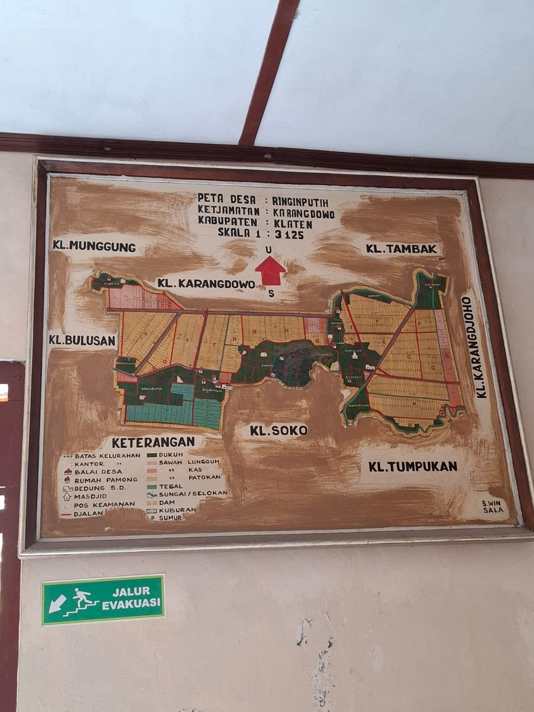

Pengumuman
10 Mei 2045
Pemutakhiran Peta Bidang Tanah Kecamatan Karangdowo Tahun 2045
Data bidang tanah telah diperbarui berdasarkan hasil survei terbaru yang mencakup seluruh 19 desa di Kecamatan Karangdowo.
Baca Selengkapnya